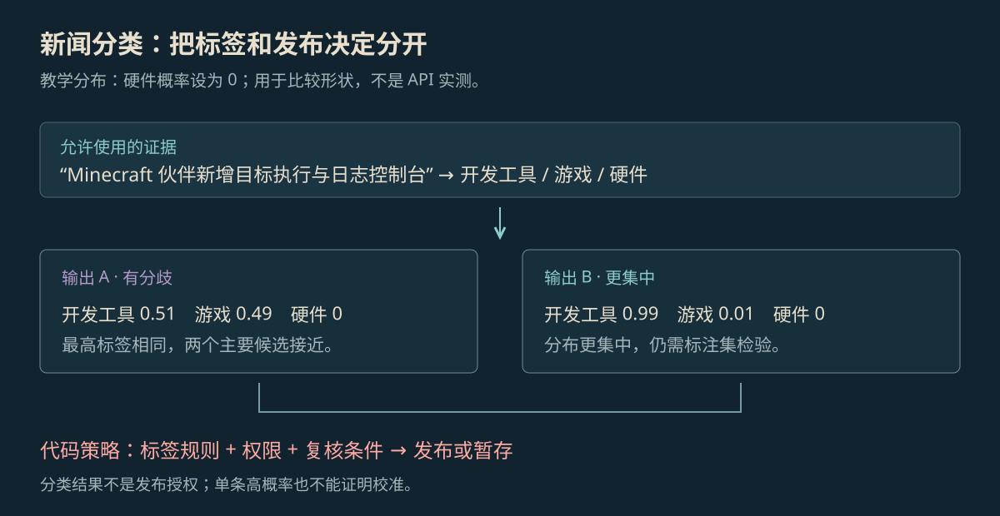

Jev 阅读笔记：选好类别以后，程序还要检查什么
用一条新闻说明怎样给 AI 准备材料和选项，以及怎样读它返回的概率。选中了类别，并不等于可以直接发布。
先定分类规则，再决定是否发布
一条关于 Minecraft AI 伙伴的更新，既与游戏有关，也像开发工具。如果只能选一个主分类，就要先定规则：按使用场景分，还是按产品形态分？规则不同，模型和人都可能给出不同答案。
Jev 课程介绍了“有限答案”的做法，也就是先列好允许选择的答案。把这次判断能用的材料放进 state，可以把它理解为一包资料；再写清问题和选项。这样返回的答案方便程序读取，但能不能发布，仍要由程序检查。

放大查看 ↗State 这包资料里放什么
新闻归档可以提供标题、正文、原始来源和发布时间。做测试时，不能把人工确认的最终类别也放进去，否则等于先把答案告诉了模型。下面只演示资料怎样摆放，不是可以直接调用 Jev 的完整代码。
{
"state": {
"title": "Minecraft 伙伴新增目标执行",
"source": "项目发布记录",
"text": "增加任务日志与游戏状态检查。"
},
"question": "按产品形态选择主分类",
"choices": [
"开发工具",
"游戏",
"硬件"
],
"policy": {
"ambiguous": "人工复核",
"publish_requires": [
"来源可访问",
"发布时间已核对"
]
}
}如果一条新闻可以有多个标签，就不必硬挤成一个选项。也可以分成“主分类是什么”和“还要加哪些标签”两个问题，分别说明怎样选。
返回 0.99，就一定比 0.51 靠谱吗
按“开发工具、游戏、硬件”的顺序，两组教学结果分别是 [0.51, 0.49, 0] 和 [0.99, 0.01, 0]。它们都把开发工具放在第一位，但第一组与游戏很接近，第二组给开发工具的概率高得多。硬件为 0 是这里的示例设定，不是接口实测。
第二组是不是更可信，需要对照一批人工确认过类别的新闻。“这条分对了吗”看这条的正确答案；“给出的概率准不准”则要看一批结果。例如很多次报 0.8 时，是否真的大约八成分对了。这种概率与实际正确比例是否对得上的检查，叫校准。
分类错了，先看错在哪里：分类规则是否含糊，资料是否不够，还是负责分类的模型表现不合适。把原因都说成“模型不够聪明”，很难知道下一步该改什么。需要人工复核的记录，也应保留为什么送去复核。